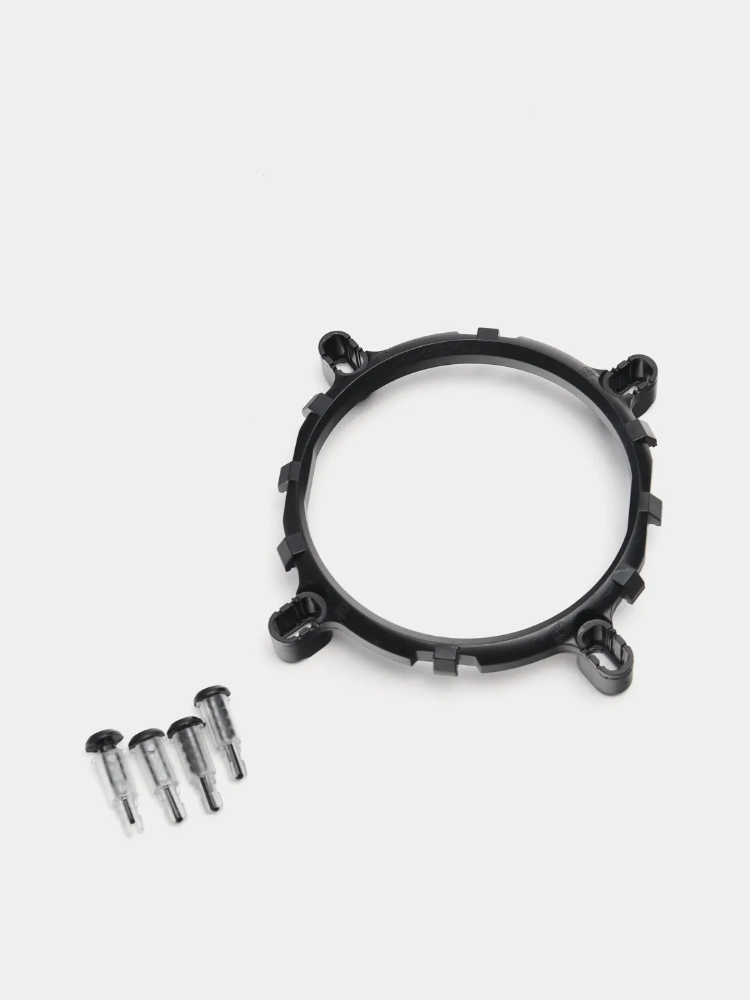
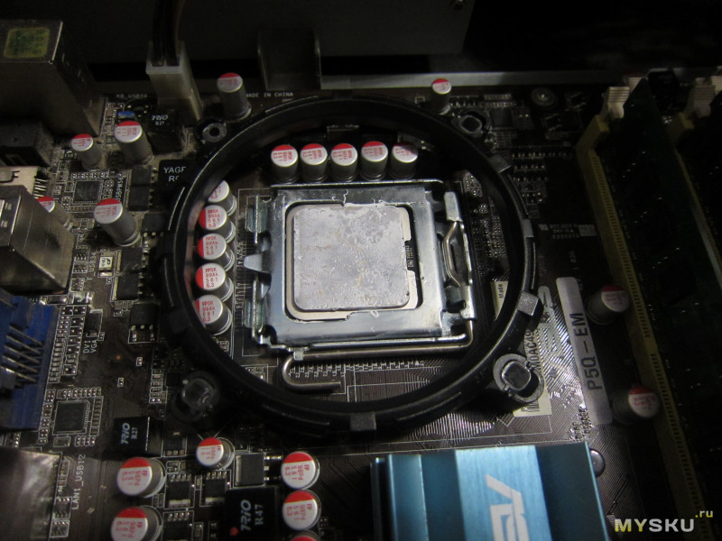
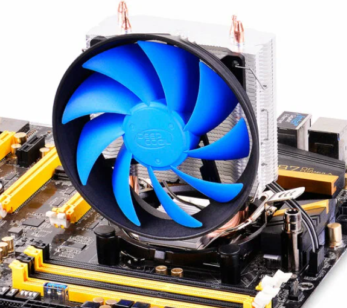

 В отличии от материнских плат AMD, у Intel ,чтобы установить башенный кулер, сначала необходимо установить крепёжное кольцо на материнку, а уже на него монтировать башню. Крепёжное кольцо обычно ставится по анологии с обычным кулером на клипсах. Вставляем защёлки в крепёжное кольцо, убеждаемся что они открыты, устанавливаем кольцо над процессором проверяя совпадение положения клипс и отверстий на плате. Далее нажимаем на клипсы защёлкивая их.
Далее ставим башню на крепёжное кольцо, не забывая что поток воздуха должен быть направлен из корпуса, то есть кулер должен быть вентилятором к передней панели. Теперь подцепляем скобу без рычага с одной стороны, и нажимая на рычаг подцепляем вторую скобу.
